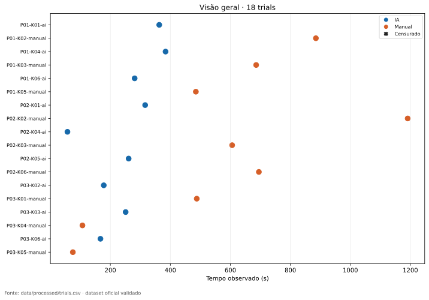
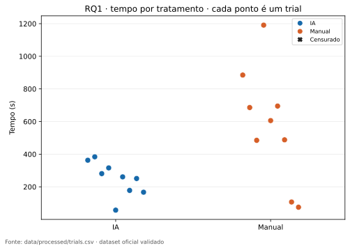
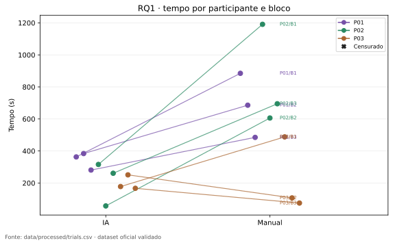
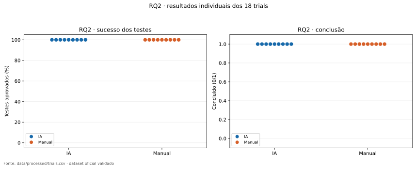
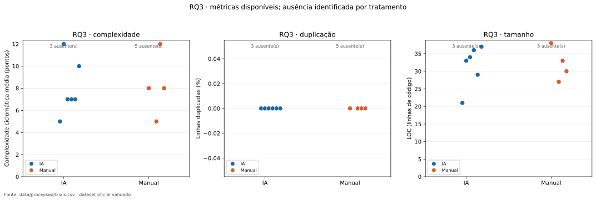
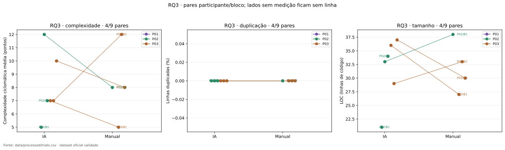

18 trials validados · 0 censurado(s) · 10/18 com métricas estruturais. Pontos ausentes são identificados; não entram como zero.
Os pontos pertencem a três participantes. Linhas pareadas conectam o mesmo participante e bloco; os gráficos não estabelecem independência estatística entre os nove pares.
Dados: trials (CSV) · pares (CSV).
Fonte: data/processed/trials.csv, aprovado por validate_dataset.





